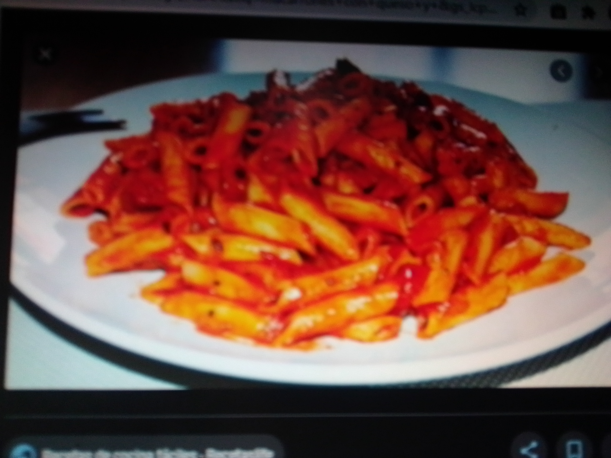

 Mientras cueces los macarrones (unos 10-12 minutos), rallas tomate y lo mezclas con albahaca fresca picada (tambien lo puedes saltear un poco si quieres). Luego, incorporas la pasta escurrida. Pones encima mozzarella, queso de cabra (o requeson si prefieres una version mas ligera). Y lo calientas un poco en el micro para que se funda.
Ingredientes: bolsa nachos fritos (el de tu preferencia), carne molida, salsas de tomate, cebolla morada, Cilantro, Limon y sal Pasos Freir la carne molida, salpimentar y tapar para que se cocine en su jugo al vapor, mezclarlo.Cuando la carne este cocida y seca agregar las salsas mezclar y herver 5 mts mas y listo. poner en plato hondo los nachos en toda la orilla y agregar un poco de la carne. Rocearle queso cheddar encima y aun lado en plato aparte el pico de gallo.